개인은 100배 빨라졌는데 회사는 왜 그대로일까요?
질문: 개인은 100배, 회사는 왜 그대로일까요
Basis는 회계법인을 위한 AI 에이전트를 만드는 뉴욕 스타트업이에요. 해설에 따르면 2023년에 세워졌어요. 회사 설명으로는 미국 상위 25개 회계법인 가운데 약 30%가 Basis를 써요. 트로야노프스키는 발표를 질문 하나로 열어요. 이 행사에 온 사람들은 코워크·Codex·Claude Code로 생산성이 크게 올랐어요. 본인도 100배쯤 올랐다고 해요. 그런데 평범한 회사의 생산성은 10배, 100배 오르지 않았어요.
humans are already used to working with non-deterministic systems. It's just those systems are normally their co-workers, not their computers.
사람은 이미 결정론적이지 않은 시스템과 일하는 데 익숙해요. 그 시스템이 보통 컴퓨터가 아니라 동료일 뿐이죠.
— 원래 발표 (이 영상 01:38 부근)
그래서 그는 답을 찾으려고 AI보다 먼저 회사를 봐요. 회사는 이미 '지능을 가진 존재들'을 조직해서 일을 시키는 시스템이니까요.
회사는 사람이 아니라 절차를 믿어요
첫 슬라이드는 회계법인 조직도예요. 맨 위 대표 아래로 매니저, 검토자, 작성자가 층층이 있고, 그 아래 치과, SaaS 스타트업, 커피 로스터, 병원, 제과점 같은 고객사가 줄지어 있고, 점선 칸(포도밭, 호텔)으로 새 고객이 계속 들어와요. 오른쪽 질문이 이 그림의 요점이에요. 대표는 어떻게 이 일이 제대로 될 거라고 믿을까요?
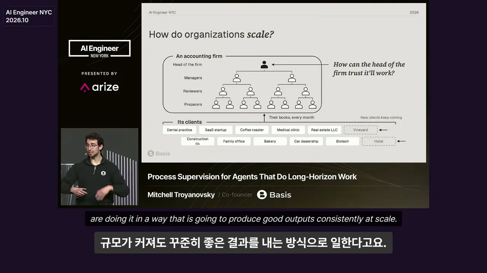
답은 절차예요. 사람은 결정론적이지 않아요. 대신 절차를 만든 사람들이 그 절차를 따르면 좋은 결과가 나온다고 믿으면, 실행하는 사람이 완벽하지 않아도 결과를 믿을 수 있어요. 다음 슬라이드는 대표가 승인한 월말 결산 절차예요. 고객사마다 분류 → 현금 대사 → 변동 설명 → 검토의 네 단계를 똑같이 밟아요. 아래 메모에는 '우리 위험 감수 수준, 우리 업무, 우리 고객에 맞춰 고른 절차'라고 적혀 있어요.
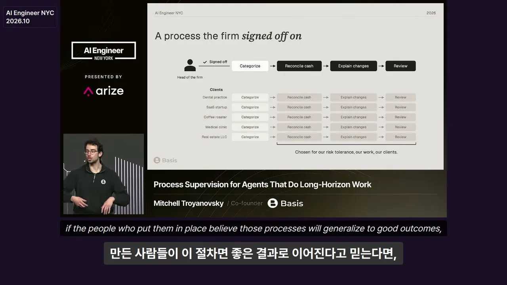
절차는 가장 작은 단계까지 내려가요. 월말 결산 안의 현금 대사를 펼치면 은행 자료 받기 → 장부와 맞추기 → 차이 추적 → 조서 작성이 나와요. 그중 첫 칸 '은행 자료 받기'에도 회사의 방식이 있어요. 회사가 고른 추출 프로그램을 회사가 쓰는 방식대로 쓰는 거예요. 아래에 줄 그어 지운 '구글에 검색하기', '그때그때 알아서 하기'가 하지 않는 방식이에요.
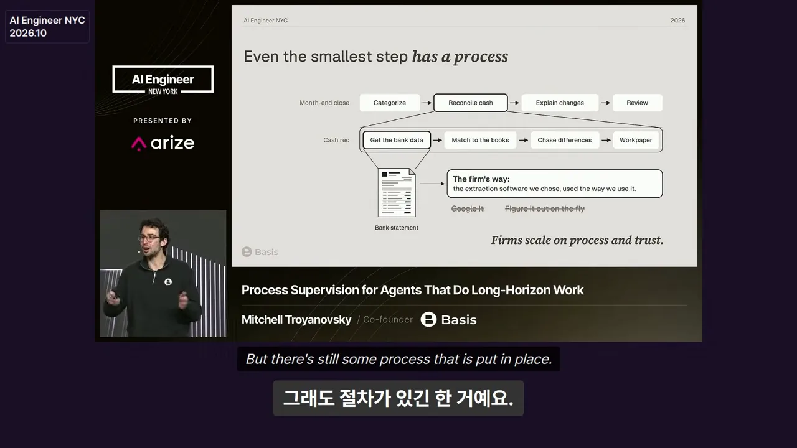
코딩 에이전트 스타일 제품의 두 가지 빈틈
트로야노프스키는 Claude Code나 Codex처럼 사용자가 원하는 일을 말하면 에이전트가 알아서 하는 제품을 '코딩 에이전트 스타일 제품'이라고 불러요. 이 방식이 개인에게는 잘 맞지만 회사 안에서는 두 군데가 비어요.
슬라이드 제목은 '코딩 에이전트 스타일 제품은 복잡함을 사용자에게 떠넘긴다'예요. 위 칸이 역량 격차예요. 같은 에이전트를 줘도 쓰는 사람에 따라 결과가 갈려요. 왼쪽은 X가 가득한 'slop cannon'(엉터리를 쏟아 내는 사람), 가운데는 체크 하나뿐인 '생산적이지 않음', 오른쪽은 체크로 꽉 찬 '아주 좋음'이에요. 사용자가 스킬과 메모리를 관리하고, 언제 에이전트를 쓸지 정하고, 에이전트 속을 짐작하는 마음 이론까지 가져야 하니까요. 그는 이 자리의 개발자에겐 쉬워도 대부분의 지식 노동자는 못 한다고 봐요.
아래 칸이 절차 격차예요. 세 사람이 똑같이 장부 대사를 시작했는데, 첫 번째는 차이를 추적하고, 두 번째는 그냥 넘기고, 세 번째는 억지로 맞춰요. 그런데 오른쪽 결과물은 '겉보기에 똑같아요'.
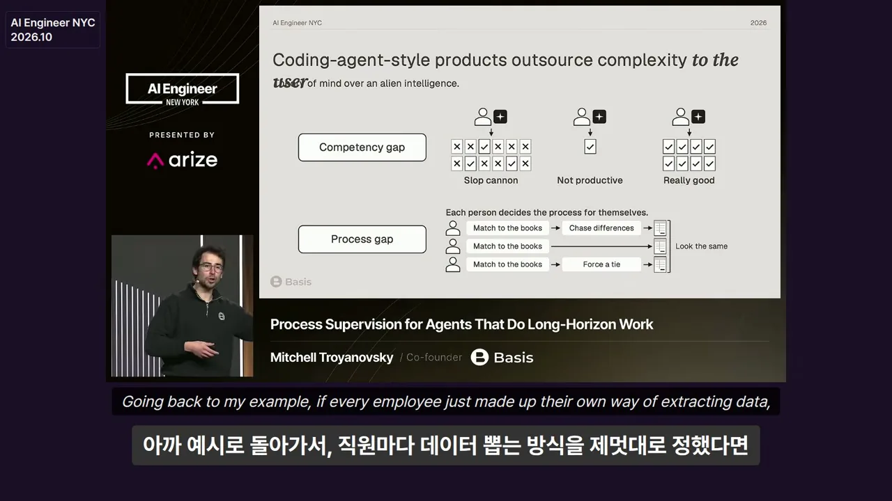
"여기 에이전트 있어요, 마음대로 쓰세요"라고 하면 일하는 방식이 사용자마다 달라져요. 그는 이게 조직이 커 가는 방식과 정반대라고 해요. 절차는 경영진이 내려 줘야지, 직원 한 명 한 명이 정하면 안 되니까요.
그래서 운영에서 실제로 일을 끝까지 해내는 에이전트를 만들려면 두 격차를 메워야 해요. 슬라이드는 짝을 하나씩 지어 줘요.
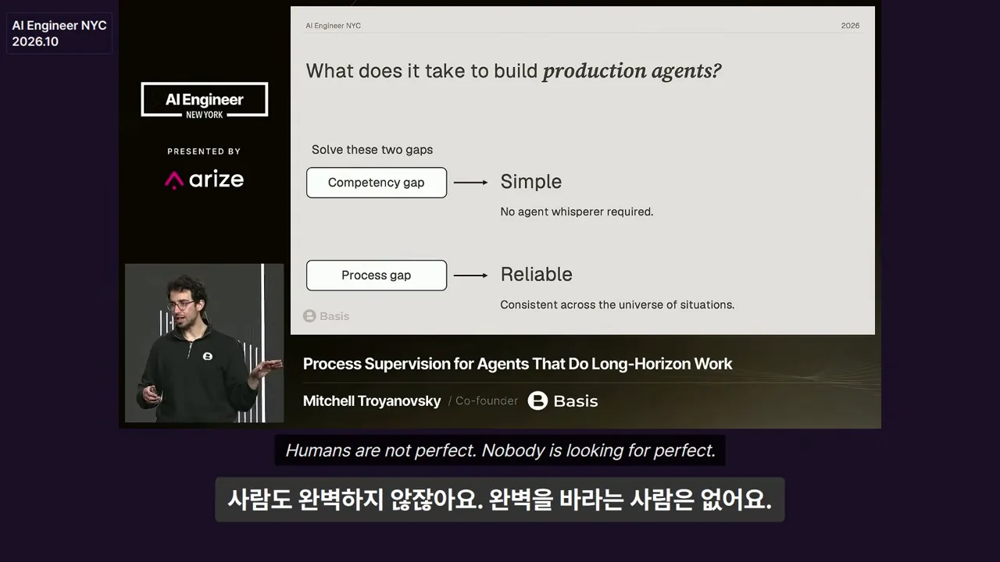
- 단순함: '에이전트 조련사'가 필요 없어야 해요. 동료에게 말하듯 원하는 걸 말하면 기대한 일이 다 돼야 해요. 사용자는 이게 에이전트라는 걸 의식할 필요도 없어요.
- 믿을 만함: 상황이 아무리 다양해도 일관돼야 해요. 완벽하라는 게 아니에요. 사람도 완벽하지 않아요. 어느 날 천재처럼 굴다가 다음 날 기본을 빼먹지 않으면 돼요.
단순하고 믿을 만하려면 의견이 분명해야 해요
단순함과 믿을 만함이 실제로 뜻하는 것
슬라이드 위쪽이 단순함이에요. 사용자는 '은행 명세서를 뽑아 줘'라고만 말해요. 오른쪽에는 에이전트가 고를 수 있는 길이 늘어서 있어요. OCR(Optical Character Recognition) 한 번 돌리기, 그냥 보기, OCR 열 개를 돌려 비교하기, OCR 후 전부 눈으로 검증하기, 파싱 코드 짜기, 그리고 말줄임표. 단순하다는 건 사용자가 이 중 무엇도 고를 필요가 없다는 뜻이에요.
아래쪽이 믿을 만함이에요. 이 명세서 한 장만이 아니라 대형 은행 디지털 명세서, 신용조합, 스캔본, 페이지를 넘는 표, 새 양식, 그리고 점선으로 그린 '아직 못 본 것'까지 같은 방식으로 처리해야 해요.
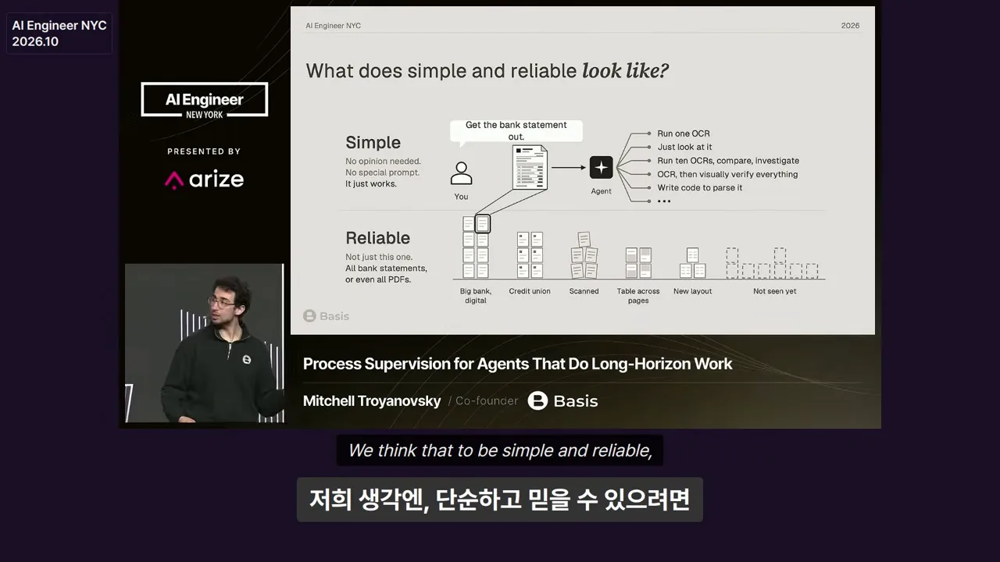
트로야노프스키는 여기서 '맞히는 게 과제가 아니다'라고 짚어요. 못 하는 게 있어도 괜찮아요. 다만 못 할 때도 일관되게 못 해야 하고, 그다음 사람처럼 나아지면 돼요. 슬라이드의 세무 예시를 보면, '이 고객은 재택 사무실 비용을 공제받을 수 있나?'에 답하는 길이 세 가지예요. 사전 학습한 지식, 위키백과, 1차 자료. 셋 다 정답에 닿을 수 있지만 Basis는 세무 결론 전에 반드시 1차 자료를 읽게 해요. 아래에는 임대 부동산, 주식 매도, 파트너십 K-1, 주 이전, 암호화폐 매도, 그리고 아직 못 본 수많은 상황이 점으로 깔려 있어요.
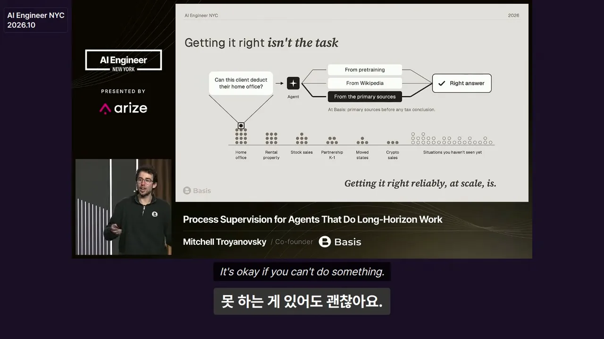
의견이 분명한 에이전트
단순함과 믿을 만함을 한 단어로 묶은 게 opinionated, 즉 '의견이 분명하다'예요. 방법을 에이전트가 그때그때 고르게 두지 않고, 만드는 쪽이 정해 둔다는 뜻이에요. 그는 PDF(Portable Document Format) 읽기를 예로 들어요. VLM(Vision-Language Model)에 통째로 넣기, 오픈소스 OCR 라이브러리로 코드 짜기, OCR 전문 업체 쓰기, OCR 후 VLM 다섯 개나 백 개로 검토하기까지 방법은 끝이 없어요. 그냥 "PDF 뽑아 줘"라고 하면 결과가 좋을 수는 있어도 믿을 수는 없어요. 고른 방법이 나빠서가 아니라 방법에 의견이 없어서예요.
해설 화면이 키운 슬라이드에서 Basis의 의견을 그대로 볼 수 있어요. 왼쪽 파일(mai_statement.pdf)의 이름으로 문서 종류를 짐작하고, 반정형이면 OCR A, 정형이면 OCR B로 보내요. 그다음 '표나 도표를 OCR이 놓쳤을까?'를 묻고, 그렇다면 비용이 더 들어도 비전 모델로 한 번 더 확인해요.
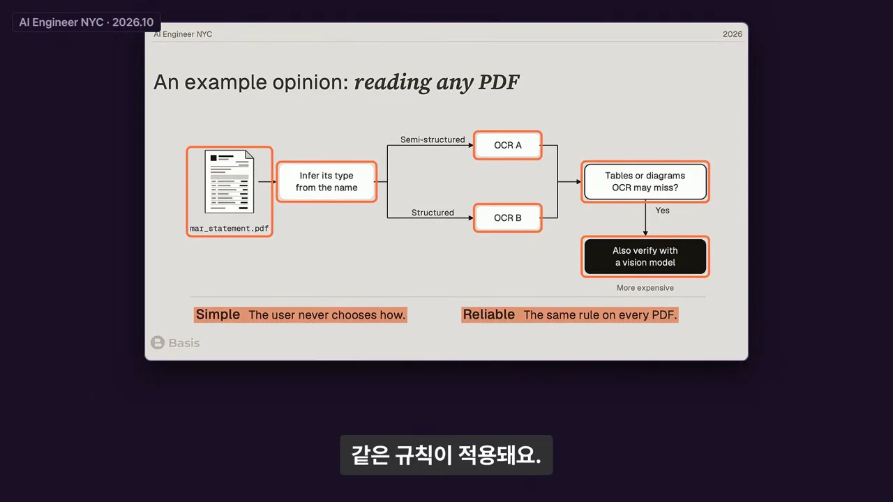
의견은 어디서 나올까요
상당수는 전문성에서 바로 나와요. 세무 에이전트가 1차 자료를 읽고 답하면 더 정확하다는 것, 파워포인트를 만든 뒤 화면을 찍어 확인하면 서식 오류가 준다는 것은 평가를 돌려 보지 않아도 알아요. 다만 의견은 정확도만의 문제가 아니에요. 화면을 찍으면 지연이 늘어요. 서식 실수가 100번에 한 번이고 그걸 감수할 수 있다면 안 찍는 것도 의견이에요.
슬라이드는 의견을 정할 때 보는 세 줄을 정리해요. 맨 위는 결과 평가로 확인한 '실제로 통하는 것', 가운데는 목표(지연, 비용, 모델이 할 수 있는 것, 감수할 수 있는 수준), 아래는 다룰 상황의 폭이에요. 상황의 폭은 '은행 명세서만'(좁고 구체적인 방법)부터 '모든 PDF'(일반적인 방법)까지 이어지고, Basis는 오른쪽 끝 'Us'에 있어요.
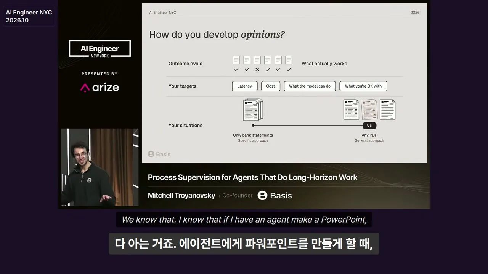
발표는 의견을 만드는 법은 여기까지만 다뤄요. 나머지 시간은 의견이 왜 중요한지, 그리고 운영 규모가 커질 때 의견을 어떻게 쓰는지에 써요.
결과 평가만으로는 운영을 다 볼 수 없어요
정답지는 가운데 좁은 구간뿐이에요
흔히 '평가'라고 하면 결과 기반 평가를 떠올려요. 정답이 있는 문제를 만들어 두고, 채점 기준으로 에이전트의 결과를 매겨요. 문제는 이 평가가 운영 환경으로 일반화되는지 알 수 없다는 거예요. 평가 케이스는 100개, 1,000개인데 실제 업무에서는 수십만 가지 상황이 생겨요. 에이전트가 오래 일할수록 트래젝토리 하나에 담긴 결정 수는 기하급수로 늘어요.
해설이 키운 슬라이드에서 종 모양 곡선이 운영에서 생기는 상황의 분포예요. 위에 묶인 'Your outcome evals'는 가운데 좁은 구간뿐이고, 정답지가 있는 건 거기뿐이에요. 오른쪽 말풍선은 곡선 바깥의 상황 하나를 펼친 거예요. 아래 주황색으로 칠한 두 줄이 이 절의 요점이에요. '이게 맞았다고 증명할 수는 없다. 하지만 정한 행동이 일어나는지는 확인할 수 있다.'
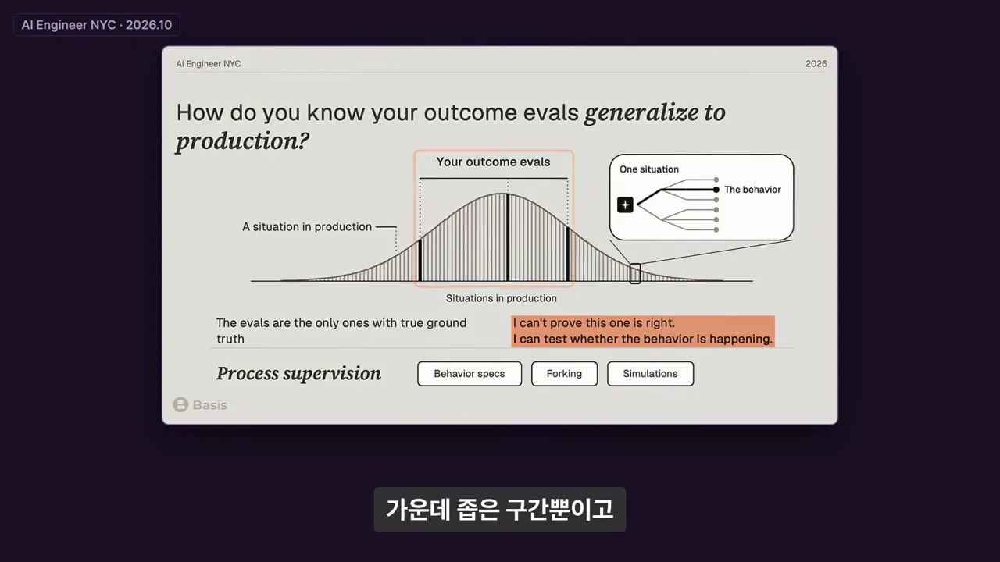
트로야노프스키는 이걸 '과정 감독'이라고 불러요. 정해 둔 행동이 실제로 일어난다면 운영에서도 일반화될 가능성이 크다고 볼 수 있어요. 확실하진 않지만, 적어도 의견을 갖고 확인하는 셈이에요.
412.06달러 예시
여기서부터 끝까지 은행 대사 예시 하나로 이어져요. 현금 대사 화면에서 은행 내역서 잔액은 48,210.55달러, 장부 잔액은 47,798.49달러예요. 412.06달러가 안 맞아요. 오른쪽 주황 칸에 원인이 적혀 있어요. 스캔한 명세서 한 줄을 OCR이 잘못 읽었고, 그 숫자가 현금 대사로 흘러 들어갔어요.
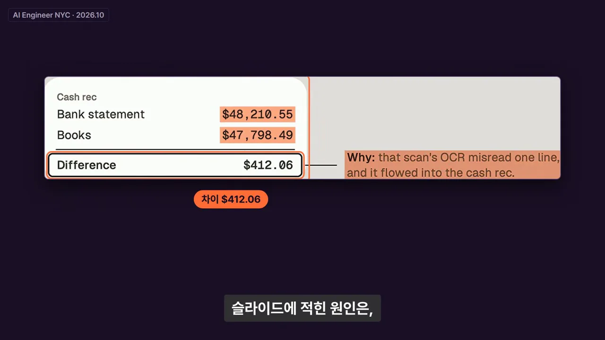
회계에서는 근거 없이 차이만큼 끼워 넣는 금액을 플러그라고 해요. Basis가 원하는 행동은 반대예요. 슬라이드의 문장은 이래요. "대사가 맞지 않으면 에이전트는 차이를 조사하고 설명한다. 숫자를 맞추려고 조정 항목을 넣지는 않는다."
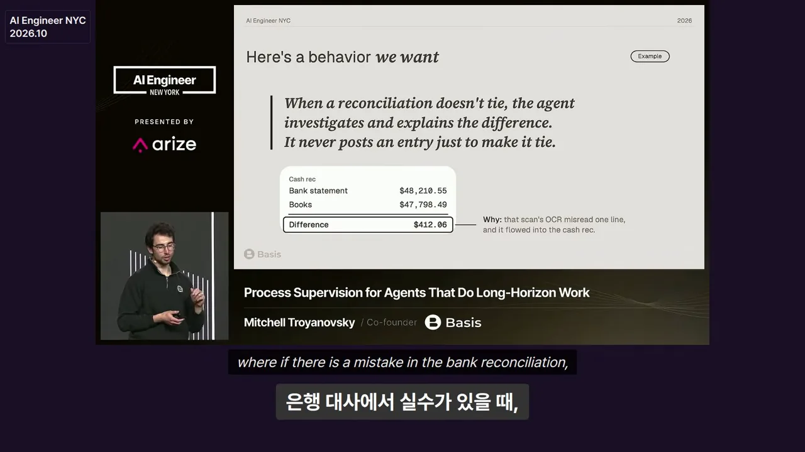
트로야노프스키는 이게 취향 문제라고 인정해요. 반대 방식을 원하는 고객도 있을 수 있어요. 중요한 건 같은 고객이 어떤 때는 이렇게, 어떤 때는 저렇게 처리된 결과를 받지 않게 하는 거예요.
행동 명세와 채점 모델
행동을 정하는 다섯 가지
이 행동은 시스템 프롬프트에 두 문장 적는다고 생기지 않아요. 좁고 단순한 에이전트라면 그걸로 될 수도 있어요. 하지만 큰 에이전트 시스템에서 행동은 시스템 프롬프트, 점진적 공개로 불러오는 스킬, 도구 설명, 모델이 학습한 습관이 한꺼번에 만들어요. 슬라이드는 이 예시에 관련된 다섯 가지를 나란히 놓고, 문제가 되는 문장에 회색 강조를 칠해 뒀어요.
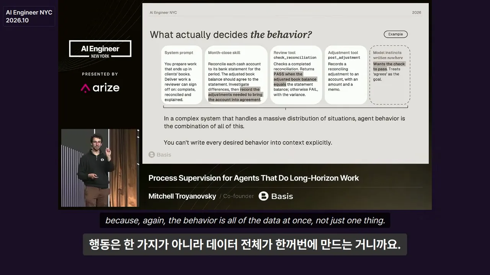
글씨가 작아서 다섯 칸을 표로 옮겼어요.
| 무엇이 | 무엇이라고 하나요 | 강조된 부분 |
|---|---|---|
| 시스템 프롬프트 | 고객 장부에 들어갈 일을 준비해요. 검토자가 승인할 수 있게 완료·대사·설명까지 마쳐서 넘겨요 | — |
| 월말 결산 스킬 | 현금 계정마다 은행 명세서와 맞춰요. 조정 후 장부 잔액은 명세서와 같아야 해요. 차이를 조사한 뒤 맞추는 데 필요한 조정을 기록해요 | 맞추는 데 필요한 조정을 기록 |
검토 도구 check_reconciliation | 조정 후 장부 잔액이 명세서 잔액과 같으면 PASS, 아니면 차이와 함께 FAIL | 잔액이 같으면 PASS |
조정 도구 post_adjustment | 금액과 메모로 조정 항목을 기록해요 | — |
| 모델의 습관 (어디에도 안 적힘) | 검사를 통과하고 싶어 하고, '맞춰짐'을 목표로 여겨요 | 검사를 통과하고 싶어 함 |
해설은 강조된 문장만 모아서 읽어 줘요. 스킬은 맞추는 데 필요한 조정을 기록하라 하고, 검토 도구는 잔액이 같아지면 통과를 주고, 모델은 통과하고 싶어 해요. 하나하나는 멀쩡한데, 합치면 숫자를 끼워 맞추는 쪽으로 기울어요.
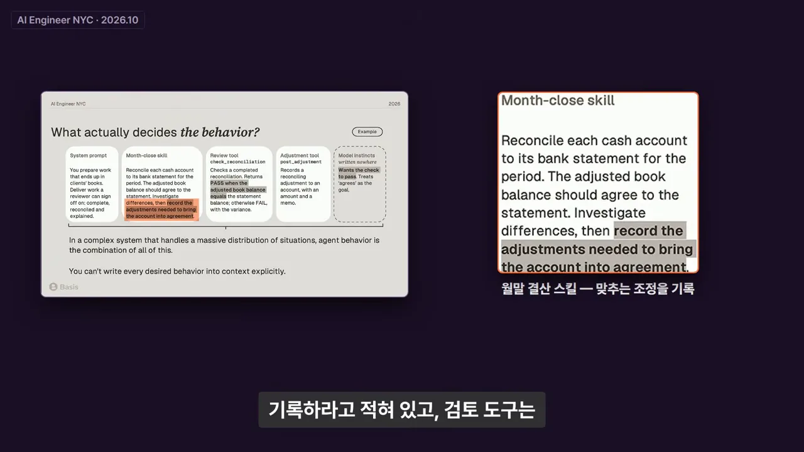
그래서 트로야노프스키는 에이전트가 일하면서 보는 컨텍스트를 '런타임 학습 데이터'로 여기라고 권해요.
The word prompt, I think, trivializes it a bit
'프롬프트'라는 말은 이걸 좀 가볍게 들리게 하는 것 같아요.
— 원래 발표 (이 영상 13:49 부근)
실제로 학습하는 건 아니지만 효과는 비슷하니, 토큰 하나하나가 행동을 어떻게 만드는지 신경 써야 한다는 거예요.
행동 명세: 고치기 전에 먼저 적는 문서
Basis는 컨텍스트를 고치기 전에 행동 명세부터 써요. 우리가 실제로 원하는 게 무엇인지, 의도를 먼저 적는 문서예요. 그는 '에이전트 시대의 제품 명세서'라고 불러요. 슬라이드는 두 가지 역할을 보여 줘요. 왼쪽은 만드는 사람 여럿의 의견을 하나로 맞추는 '강제 장치'예요. 오른쪽은 가장 중요한 것만 정의하되, 에이전트가 읽는 시스템 프롬프트·스킬·도구와는 따로 둔다는 점이에요. 행동 명세 칸 아래에 '원하는 것 · 에이전트 컨텍스트에는 없음'이라고 적혀 있어요.
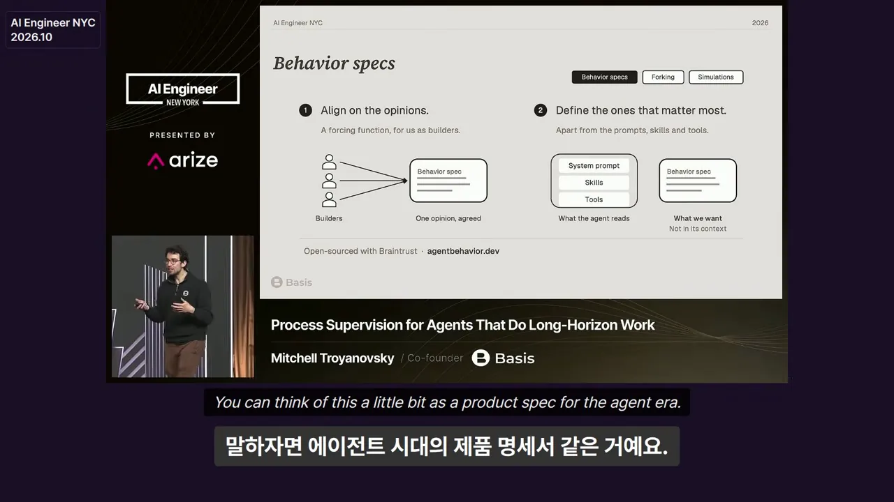
모든 걸 적지는 않아요. 다 적으면 같은 내용을 여러 곳에 중복해 두게 되니까요. 가장 중요한 의견만 골라 적고, 그걸 채점 기준으로도 써요.
채점 모델이 정답지 없이 잡아냈어요
채점은 또 다른 AI 모델이 해요. 실행 기록을 보고 두 가지를 물어요. 이 상황에 명세가 적용되나? 적용된다면 지켰나? 슬라이드 왼쪽 위가 행동 명세예요. 앞의 문장에 더해 '적용: 차이가 있는 모든 대사', '제외: 명세서의 은행 수수료처럼 이미 출처 있는 항목으로 설명된 차이'가 적혀 있어요. 그 아래 주황 줄 네 개가 실제 실행 기록이에요.
- 장부에서 412.06달러를 찾았지만 아무것도 못 찾았어요.
- '대사 조정, 412.06달러'를 기록했어요.
check_reconciliation: PASS- '차이 0.00달러'라고 보고했어요.
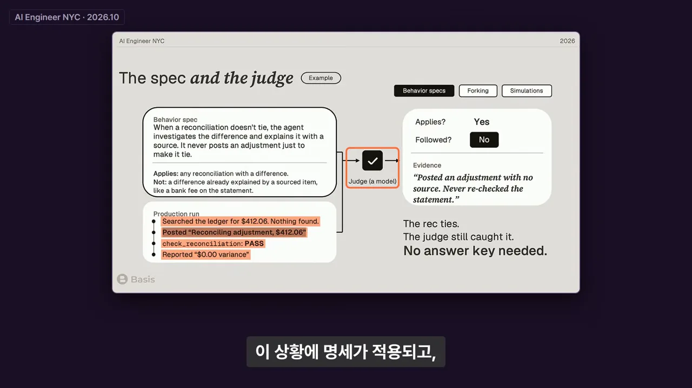
채점 모델의 판정은 적용: 예, 준수: 아니요예요. 근거는 "출처 없는 조정을 넣었고 명세서를 다시 확인하지 않았다"예요. 결과 평가였다면 숫자가 맞았으니 통과했을 실행이에요.
이 방식은 정답이 없는 어떤 트래젝토리에도 쓸 수 있어요. 결과 평가의 정답지와 채점 기준도 중요하지만, 그걸 늘리는 속도로는 행동을 감독하는 능력을 늘리는 속도를 따라갈 수 없다는 게 그의 말이에요.
포킹과 시뮬레이션: 고친 건 프롬프트가 아니라 도구
포킹: 어긋난 판단 직전으로 돌아가 보기
명세를 어겼다는 건 알았어요. 그럼 왜 어겼을까요? 첫 번째 도구가 포킹이에요. Claude Code나 Codex 웹 앱에는 메시지마다 작은 포크 아이콘이 있어서, 그 지점에서 에이전트의 사본을 만들 수 있어요. 트로야노프스키는 이게 로컬 컴퓨터에서는 잘 되지만, 클라우드에서 데이터베이스와 실행 환경과 프롬프트까지 그대로 재현하는 시스템을 만들기는 어렵다고 해요.
흐름은 이래요. 평가 세트든 테스트든 운영이든, 행동 평가에서 떨어진 트래젝토리가 있어요. 에이전트가 명세와 어긋난 결정을 내리기 직전으로 가서 사본을 떼요. 그다음 에이전트에게 왜 그랬는지 묻거나, 컨텍스트를 고쳐서 행동이 나아지는지 봐요. 결과 평가만으로는 이게 어려워요.
You have potentially a thousand inference calls in your 5-hour long agent trajectory run.
5시간짜리 에이전트 실행 하나에 추론 호출이 천 번쯤 들어 있을 수 있어요.
— 원래 발표 (이 영상 18:17 부근)
결과가 틀렸다는 것만으로는 그 천 번 중 어디가 문제인지 모르지만, 행동 평가는 어긋난 지점을 짚어 줘요.
해설이 키운 포킹 예시 슬라이드를 보면, 왼쪽 '문제의 실행'은 준수: 아니요예요. 그 아래 저장 지점은 412.06달러를 어떻게 할지 정하기 직전이에요. 거기서 하네스의 세 군데를 각각 바꾸고 사본을 다섯 개씩 돌렸어요.
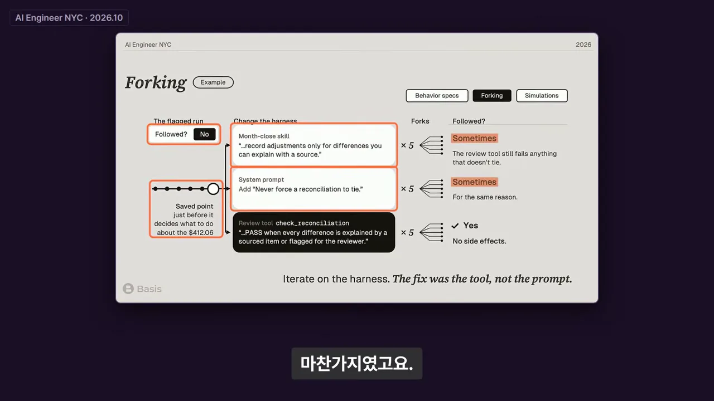
| 바꾼 곳 | 바꾼 내용 | 명세를 지켰나요 |
|---|---|---|
| 월말 결산 스킬 | '출처로 설명할 수 있는 차이에만 조정을 기록하라' | 가끔. 검토 도구가 안 맞는 건 여전히 FAIL로 처리해서요 |
| 시스템 프롬프트 | '대사를 억지로 맞추지 마라' 추가 | 가끔. 같은 이유로요 |
검토 도구 check_reconciliation | '모든 차이가 출처 있는 항목으로 설명되거나 검토자에게 넘겨졌으면 PASS' | 예. 부작용 없음 |
앞 절의 다섯 칸 표와 맞춰 보면 이유가 보여요. 스킬과 프롬프트에 무엇을 적든, 검토 도구가 '잔액이 같아야 PASS'인 한 모델은 통과하고 싶어서 숫자를 맞추는 쪽으로 기울어요. 통과 기준 자체를 바꾸자 플러그를 넣을 이유가 사라졌어요.
시뮬레이션: 코딩 에이전트에게 흉내를 시키기
트로야노프스키가 가장 좋아한다는 마지막 도구는 시뮬레이션이에요. 바보 같아 보여도 효과가 좋다고 해요. 슬라이드 왼쪽의 여섯 단계가 방법이에요.
- 운영 에이전트의 프롬프트, 스킬, 도구 설명을 파일로 렌더링해요
- 코딩 에이전트가 서브에이전트를 띄워요
- 서브에이전트마다 그 파일을 읽고 운영 에이전트인 척해요 — 속이지 말라고 꼭 일러둬요.
- 상황을 하나 줘요 — 평가나 운영에서 본 상황을 재현해요.
- 무엇을 정하는지 봐요
- 왜 그랬는지 묻고, 파일에서 원인을 찾아요
오른쪽은 검토 도구 수정이 다른 상황에서도 통하는지 이렇게 확인한 예예요. 412.06달러 OCR 오독이면 페이지를 다시 읽어 찾아내요. 명세서의 35달러 은행 수수료면 출처 있는 조정을 넣어요. 플러그가 아니라 진짜 조정이에요. 5페이지 중 3페이지가 빠졌으면 검토자에게 넘겨요. 셋 다 체크 표시예요.
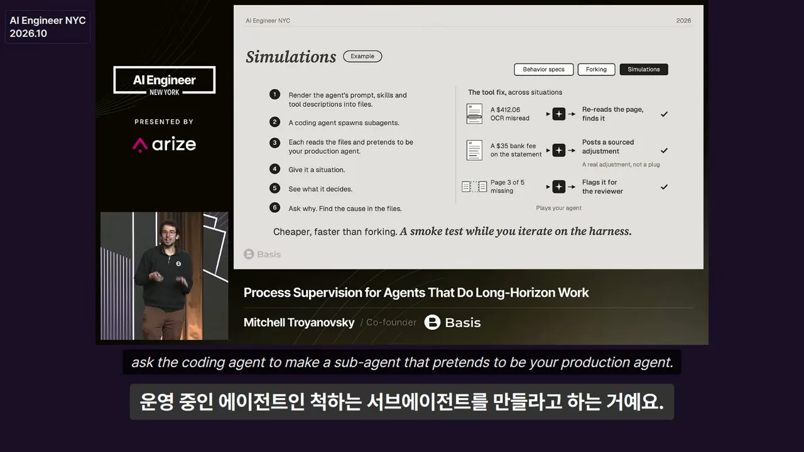
당연히 포킹보다 정확도는 훨씬 떨어져요. 그래도 훨씬 싸고 빨라서, 환경 전체를 포크하는 비싼 과정 없이 아이디어를 바로 시험할 수 있어요. 아무것도 새로 만들지 않고 오늘 바로 할 수 있다는 것도 장점이에요. 그는 포킹을 사내 시스템에 넣기 전까지 1년 반 넘게 이 방법만 썼다고 해요.
한눈에 보는 412.06달러 사건
여러 슬라이드에 흩어진 예시를 한 줄로 이으면 이래요. 원인은 OCR이었지만, 고친 곳은 검토 도구였어요.
과정 감독이 닫는 고리
이 방법들은 결국 에이전트가 운영의 분포 전체로 일반화되는지 알려 주는 추가 신호예요. 앞의 종 모양 곡선이 다시 나오는데, 이번에는 결과 평가 구간 바깥에도 체크 표시가 찍혀 있어요. 오른쪽 끝 두 칸만 X예요. 아래 문장은 '행동 명세는 정답지 없이도 실행마다 확인한다. 행동이 어디서 지켜지고 어디서 안 지켜지는지 보여 준다'예요.
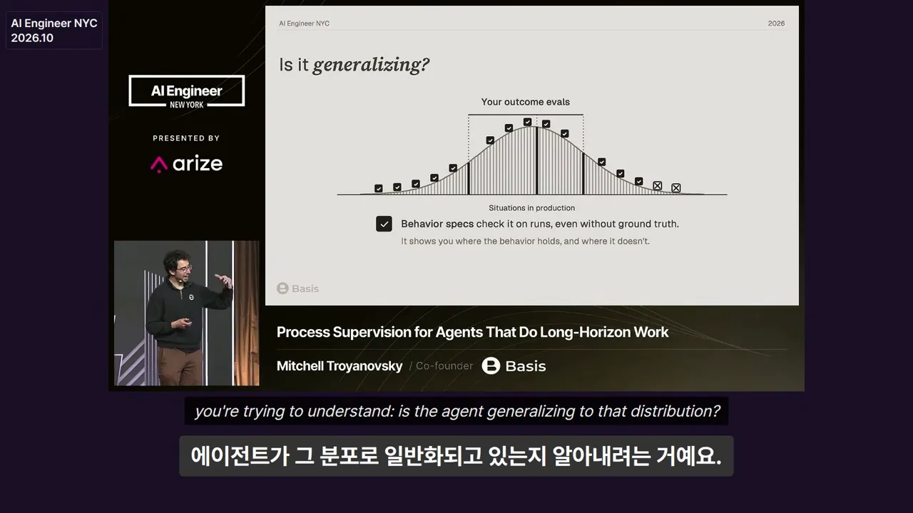
신호가 쌓이면 고리를 닫을 수 있어요. 슬라이드에서 고리는 이렇게 돌아요. 의견을 글로 적어 신호를 만들고, 에이전트가 평가와 운영에서 일하고, 포크와 시뮬레이션으로 수정안을 시험해 시스템(하네스, 때로는 의견 자체)을 고쳐요. 신호 칸 안의 대비가 핵심이에요. 결과 평가는 '케이스 몇 개, 끝에 점수 하나'이고, 행동 명세는 '모든 실행에서, 어떤 단계의 어떤 행동인지'를 알려 줘요.
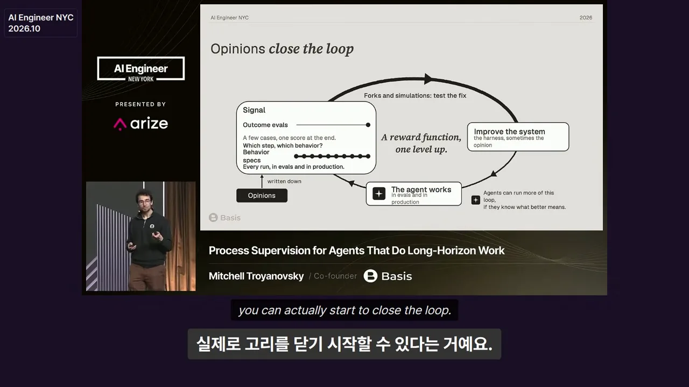
오른쪽 아래 작은 글씨도 눈여겨볼 만해요. '무엇이 더 나은지 알면, 에이전트가 이 고리를 더 많이 직접 돌릴 수 있다.' 스스로 나아지는 에이전트로 가는 길이 여기라는 뜻이에요.
회사가 에이전트를 믿게 되는 길, 그리고 37수
사람 직원을 믿게 되는 길과 같아요
트로야노프스키는 처음의 회계법인 그림으로 돌아가요. 해설이 키운 슬라이드에서 세로축은 '틀리면 무엇이 깨지나', 가로축은 '얼마나 믿나'예요. 에이전트는 왼쪽 아래 '명세서 읽기'에서 시작해요. 이때는 과정 감독을 받으며 한 줄 한 줄 확인돼요. 근거가 쌓이면 '현금 대사'로, 다시 '월말 결산 전체'로 올라가요. 오른쪽 아래 '한눈에'는 믿음이 충분히 쌓여서 훑어보기만 해도 되는 단계예요.
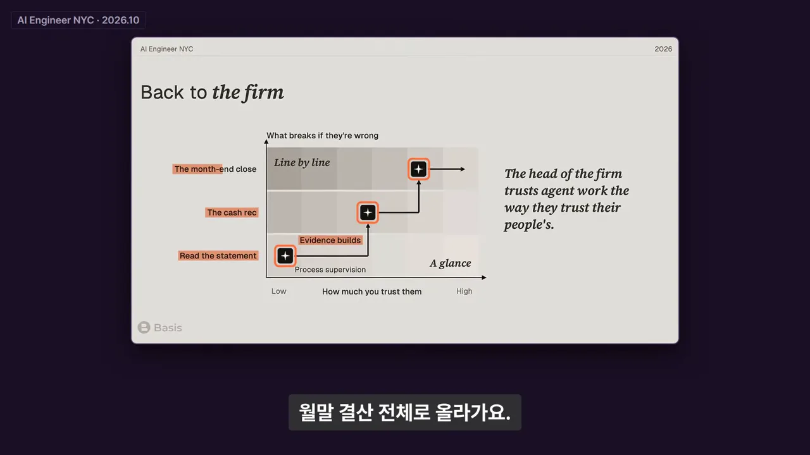
그는 PR(Pull Request) 검토에 빗대요. PR을 받으면 두 축을 봐요. 변경이 얼마나 위험한지, 그리고 보낸 사람이 얼마나 유능하다고 보는지요. 회사에서 가장 덜 유능한 사람이 핵심 서비스를 고치면 꼼꼼히 봐요. 가장 유능한 사람이 내부 문서를 고치면 덜 봐요. 의견이 분명한 에이전트는 쓰기 쉽고 믿을 만하니, 사람들이 같이 일하면서 점점 더 믿게 돼요. 사람과 사람 사이와 똑같아요.
방식을 정하면 37수를 막지 않을까요
발표 끝에 그가 자주 받는 반론을 다뤄요. 에이전트가 하고 싶은 대로 두면 더 나은 방법을 찾지 않을까? 37수 같은 걸 둘 수도 있지 않나? 37수는 2016년 3월 서울에서 알파고가 이세돌 9단과의 두 번째 대국에서 둔 수예요. 사람 눈엔 낯설었지만 지금도 창의적인 수로 꼽혀요.
슬라이드의 답은 세 줄이에요. 우리는 누군가의 결산에 37수를 두라고 돈을 받는 게 아니다. 믿을 만하게, 규모 있게 일하라고 돈을 받는다. 그리고 모델이 좋아지면 의견도 한 단계 위로 올라간다.
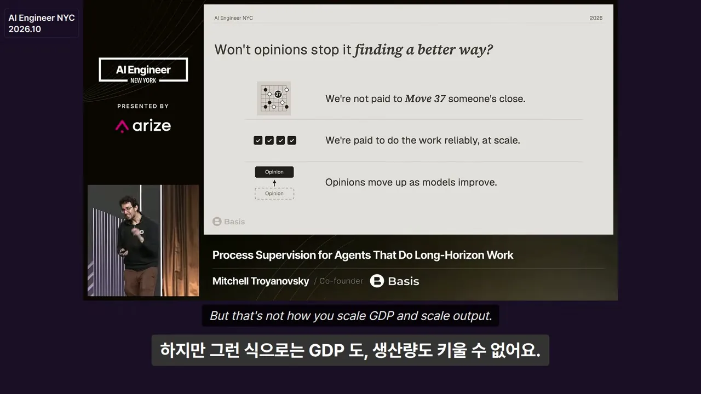
Nobody wants their agent to move 37 their tax return.
자기 세금 신고를 에이전트가 37수처럼 처리해 주길 바라는 사람은 없어요.
— 원래 발표 (이 영상 22:46 부근)
그가 말하는 GDP(Gross Domestic Product)와 생산량은 이런 식으로 커지지 않아요. 사람들이 원하는 건 믿을 수 있게, 규모 있게, 직원들이 같이 일할 줄 아는 방식으로 처리되는 거예요.
마지막에 남긴 네 줄
발표는 네 문장으로 끝나요. 해설은 앞의 세 줄을 주황으로 칠해 강조해요.
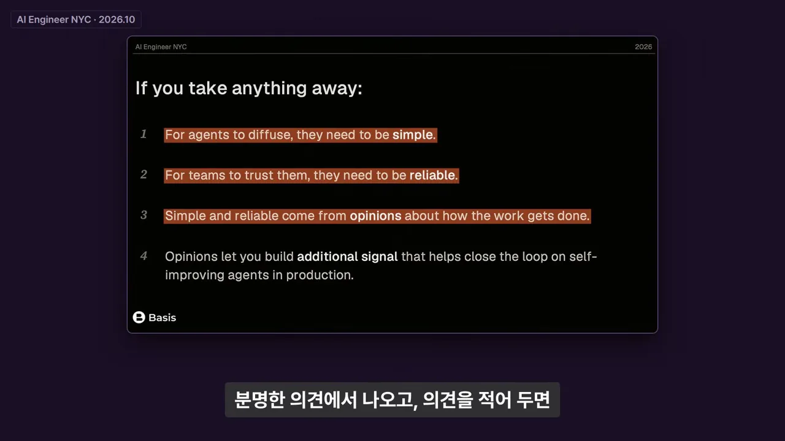
- 에이전트가 퍼지려면 단순해야 해요.
- 팀이 믿으려면 믿을 만해야 해요.
- 단순함과 믿을 만함은 일하는 방식에 대한 의견에서 나와요.
- 의견이 있으면 추가 신호를 만들 수 있고, 그 신호로 운영 중에 스스로 나아지는 에이전트의 고리를 닫을 수 있어요.
해설은 처음 질문으로 돌아가 이렇게 정리해요. 회사가 사람에게 일을 맡길 때처럼 일하는 방식을 먼저 정하고, 그 방식대로 했는지를 확인하는 게 트로야노프스키의 답이에요. 내 팀에 에이전트를 들인다면 먼저 적을 건 몇 줄이에요. '이런 상황에서는 반드시 이렇게 한다. 이렇게는 하지 않는다.' 그 문장이 있어야 결과가 맞았는지뿐 아니라 정한 방식대로 했는지도 확인할 수 있어요.